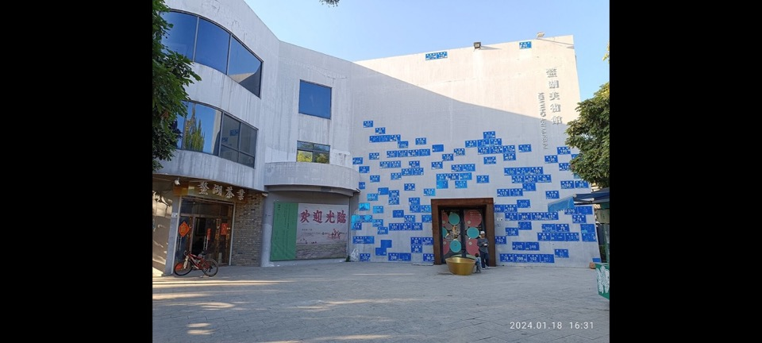
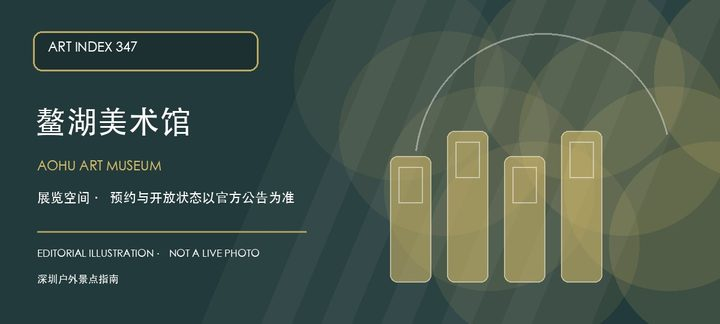

适合谁
适合愿意阅读展讯并细看少量作品的人；只想寻找固定常设展或网红机位者应先降低预期。

SHENZHEN GUIDE · 213
观澜 · 艺术村落
鳌湖艺术村位于观澜鳌湖社区，壁画、村屋和艺术家工作室散落在真实社区中，公共可见作品与私人创作空间必须分清。与同类地点相比，最值得停下来的差异落在村巷公共壁画和艺术家工作室这两个具体节点上。这里的价值随展期变化，应把村巷公共壁画与艺术家工作室放在同一次观看中，辨认作品、空间和所在街区的关系。先查当期展讯与入口，不把官方名录中的地址等同于随时可入场。
WHY GO
适合愿意阅读展讯并细看少量作品的人；只想寻找固定常设展或网红机位者应先降低预期。
先从公开巷道看壁画与村屋，遇开放工作室再按主人指引进入；没有活动时不敲门打扰。
公共交通先到观澜鳌湖社区片区，再以鳌湖艺术村公开参观入口为终点；校园、园区或预约型场馆须同时核对门禁与开放日。
自驾优先使用鳌湖艺术村所属建筑、园区或邻近正规公共停车场；预约时一并确认车牌登记、门岗和社会车辆准入规则。
全年可安排，炎热和降雨日更友好；展期、开幕活动与换展闭馆比季节本身更影响体验。
NEARBY IDEAS

编辑配图·非现场实景鳌湖美术馆位于龙华鳌湖艺术村，是官方美术馆名录中的独立机构；它与现有的鳌湖艺术村不是同一个条目，前者应按具体展馆、后者按艺术村落来理解。
 编辑配图·非现场实景
编辑配图·非现场实景
俄地吓村位于观湖街道俄地吓片区，传统客家村落在城市更新背景下仍保留旧巷、围屋和社区公共空间线索。
 编辑配图·非现场实景
编辑配图·非现场实景
求雨岭城市公园位于观澜街道牛湖社区启明街旁，三十公顷级山体公园与牛湖老村、版画基地相邻，可用低强度登高补充观澜文化路线。